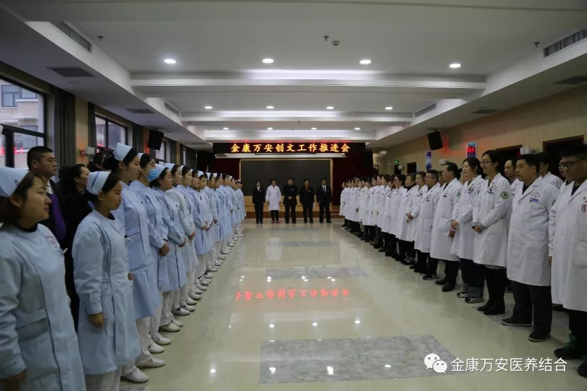
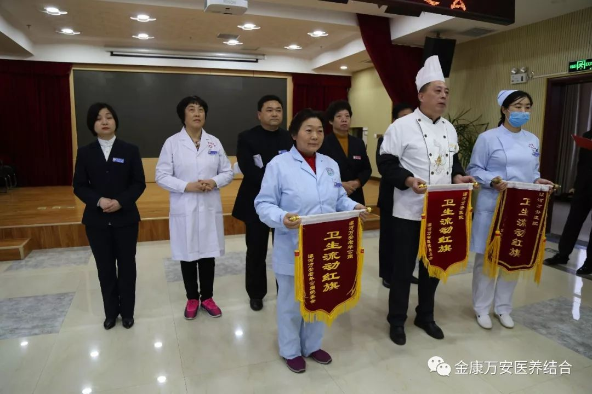

2018年12月10号早晨，漯河万安康复医院、万安老年公寓召开周一分享晨会，万安康复医院、万安老年公寓全体医护人员、养老护理员、后勤行政人员等共计100余人参加此次晨会。河南金康万安医疗养老服务有限公司总经理王卫峰、副总经理张莉、副总经理刘洋、业务院长万素华、杨延顺出席了此次晨会。
 会议伊始，由副总经理张莉为养老部五楼、老年病区、膳食科颁发卫生流动红旗。张总说，拥有一个良好的卫生环境，老人会入住舒心，患者会看病放心，我们家人们更会工作的开心。卫生环境发展不容忽视，家人们要从点滴做起，抓好卫生环境，向先进科室学习。
会议中，副总经理张莉重点为家人们分享了创文攻坚工作和医疗废弃物规范化管理工作。张总说，创文工作无小事，家人们要从小事做起，严格按照我市创文的要求，结合实际情况高标准做好创文攻坚工作；其次张总再次强调医疗废弃物规范化管理工作，要严管、严抓、严格监督医疗废弃物管理工作，杜绝一切不规范操作发生。
最后，由总经理王卫峰进行总结，王总首先带领家人们观看消防安全宣传片，观看结束王总强调，安全重于泰山，不管在工作中还是生活中家人们一定要注意消防安全，切实把消防安全工作落到实处。其次，王总再次强调创文攻坚工作，王总表示，创文工作既是我市的政治工作也是我院的政治工作，我们家人们要高度重视、严格要求，督查落实。最后王总要求大家迅速行动起来，积极响应市委、市政府的号召，为我市创文做贡献、添活力！